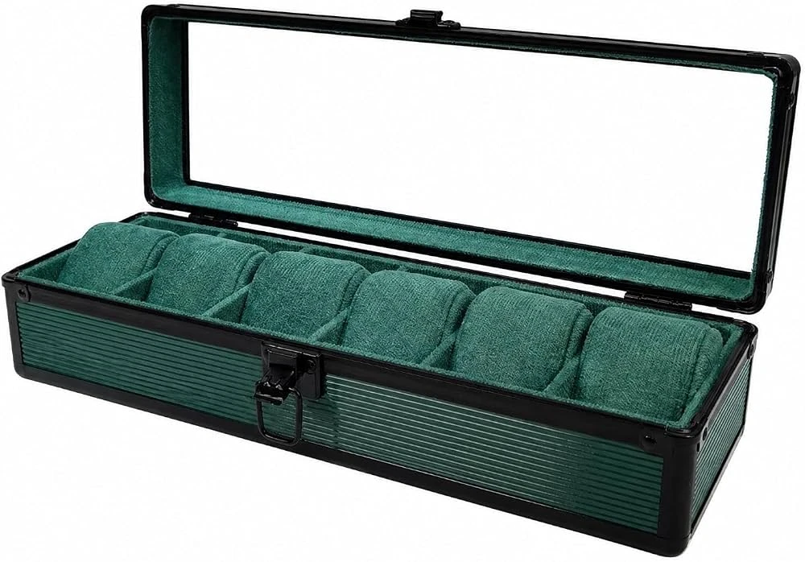
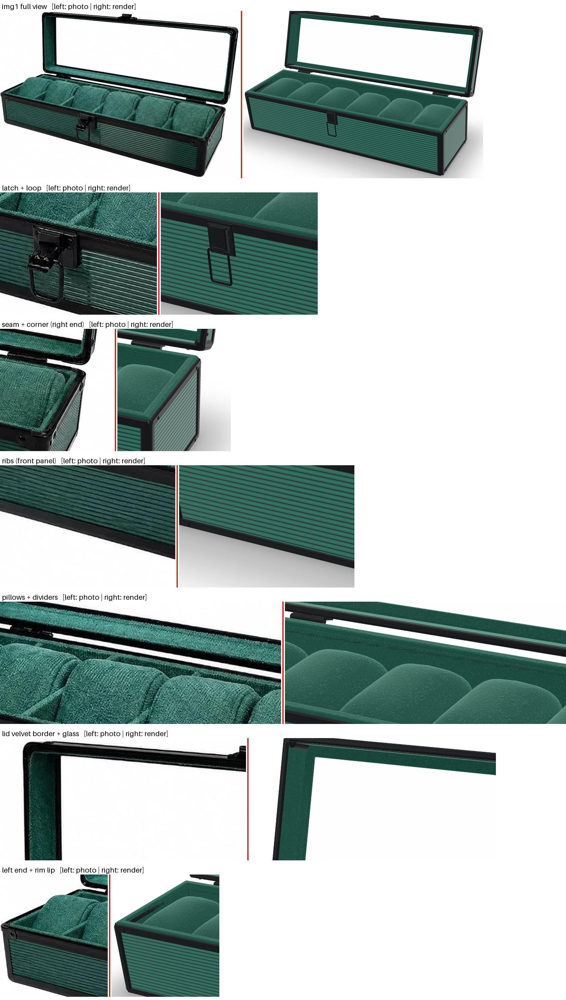
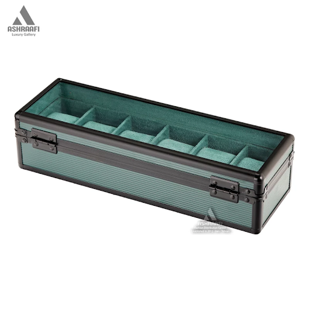
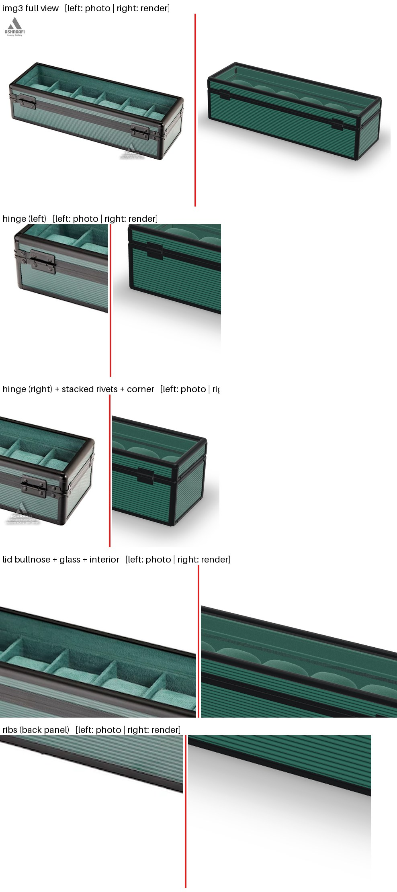
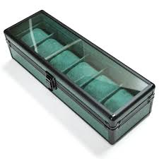
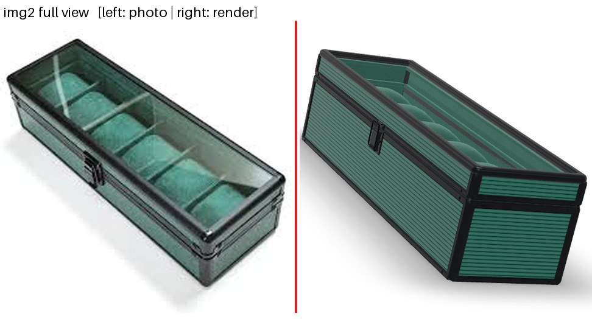
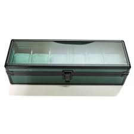
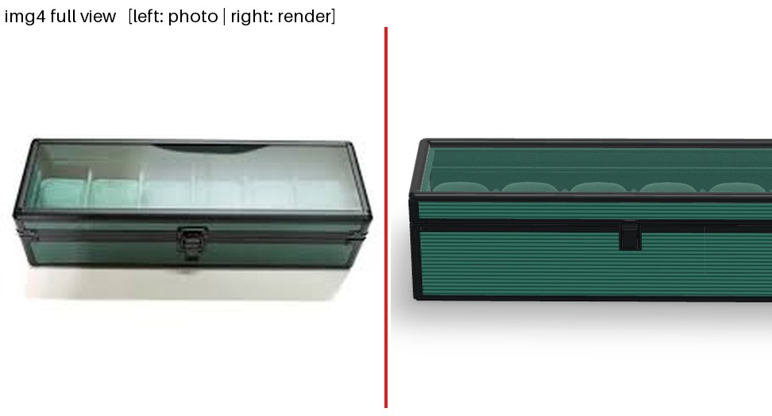
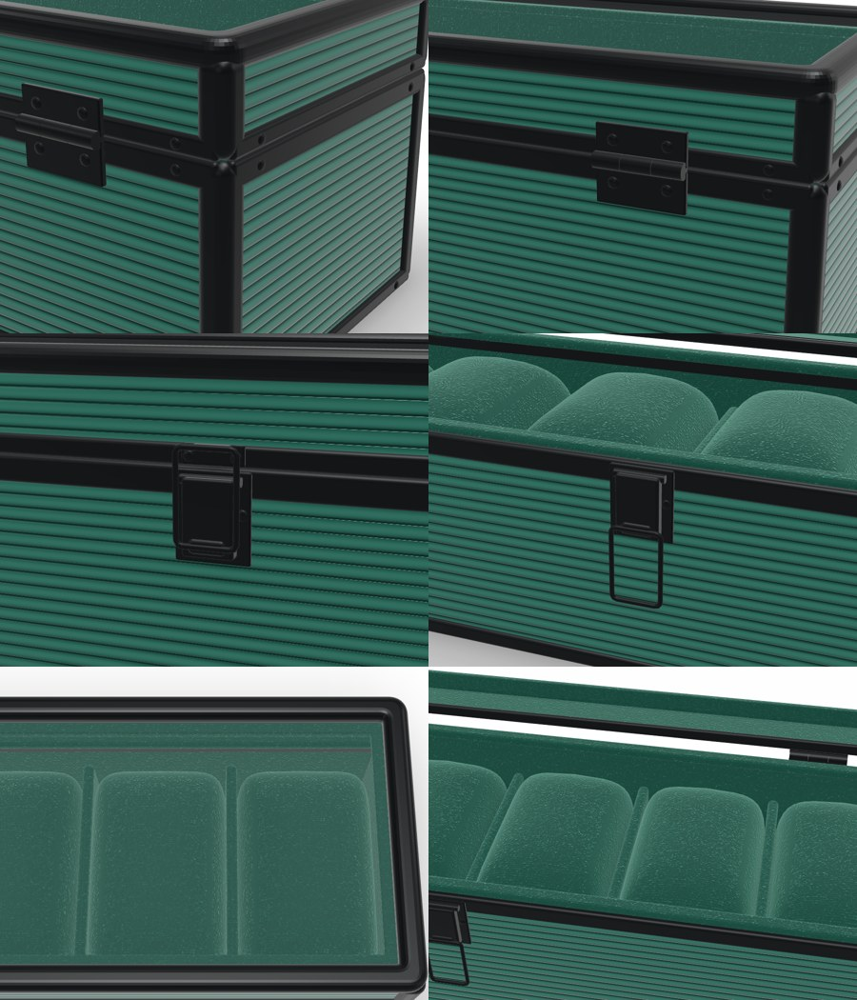

1Photo vs. render: final pass 4
Left: your reference photo. Right: the comparison sheet, with the photo on the left and the render on the right of each pair. The render uses a camera fitted automatically to the photo's outline. Zoomed crops follow the full view. Click a sheet to open it at full size.








Hardware close-ups (no photo shows these at this scale)

Corner + stacked seam rivets · back hinge with 4 screws · latch closed · latch open (loop hanging) · bullnose lid frame · pillows and dividers.
272-frame drag-to-spin
The same 72 WebP frames (5° apart, 1500 × 1500) used by the component's fallback mode. Drag sideways or use the arrow keys. Vertical swipes still scroll the page on a phone.

About these frames
Closed lid, camera 22° above the box, pure white (#FFFFFF) background, baked soft contact shadow. Frame 0 is the front three-quarter view and also serves as the poster image.
Files: assets/spin/frame_000.webp … frame_071.webp (6.5 MB total).
3Seamless-loop spin video
spin.mp4: 1080 × 1080, H.264, 24 fps, 10 s per turn. The last frame leads straight back into the first.
A VP9 spin.webm copy plays first in browsers without H.264 support.
4Live 3D model
This is the real GLB (1.4 MB) in Google's model-viewer, both stored in this folder.
Drag to rotate, scroll or pinch to zoom, and use the button to play the OpenLid / CloseLid animations.
Notes
The AR button only appears on a phone served over HTTPS (Scene Viewer / Quick Look), so it is hidden in this offline preview. The live view uses model-viewer's built-in "neutral" lighting, so it looks slightly different from the studio-lit frames and video.
Full accuracy checklist and known differences: docs/ACCURACY_REPORT.md in the repository.